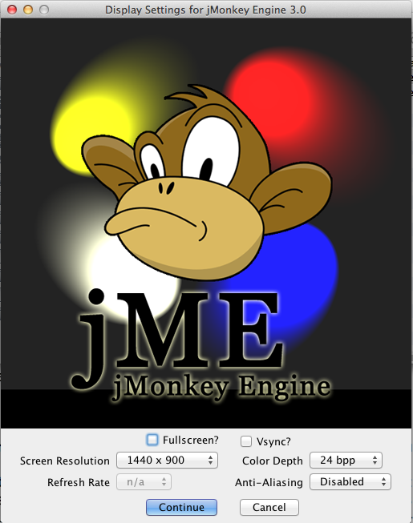
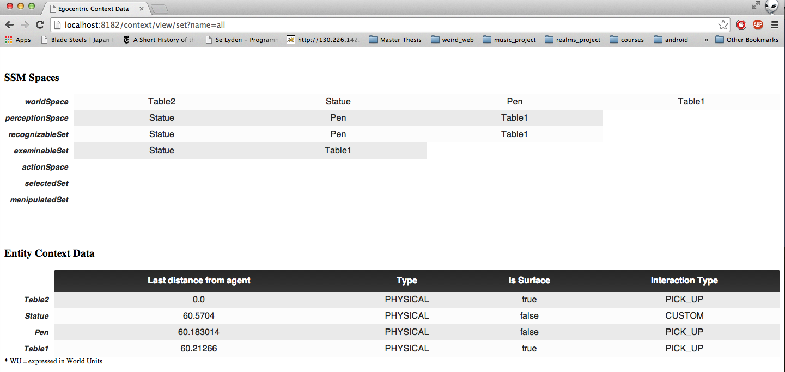

Prerequisites
To run the target evaluation software you will need the following software and hardware requirements:
- - Operating system: Mac OS X, Windows, Linux, Solaris
- - CPU > 1 GHz
- - Recommended Graphic card: AMD/ATI Radeon 9500, NVIDIA GeForce 5 FX, Intel GMA 4500, or better supporting OpenGL 2.0 or better (native libraries are included in download)
- - Java Runtime: Java 5 or higher. The Java Virtual Machine (JVM) is required to run jME games. The JVM is often preinstalled, if not, your users get it for free from http://www.java.com; for Mac OS, see apple.com.
- - Two displays: on one you will be running the actual simulation, while in the other you will run the SSM visualization client
It is recommended to start the evaluation with a clean session on your OS. Try stopping all the APPs you don't need for this evaluation!
In the last task you will be needing the JMonkeyEngine development platform, a NetBeans based IDE. Feel free to start the download and installation before you get there as it is a large download and it might require a substantial amount of time.
Instructions
The evaluation consists of three tasks; completing the warm-up task should make you feel comfortable with concepts and interactions providing a hands-on experience. Next, task 1 will evaluate the usability and simulation power of a ready made egocentric scenario. Finally, task 2 will evaluate the usability of the EgoSim framework, requiring you to actually use the framework to implement an egocentric scenario, from scratch. Each step you will provided all the necessary resources and descriptions to successfully fulfil it.
For the first two steps you will get a link to a remote location containing three builds, one for each operating systems mentioned above. Please identify the one that fits your local installation. Once downloaded, uncompress the archive and/or install the software if needed (this step might not be needed). Once you have access to the executable, run it -- this will bring up a settings window where you can select your desired resolution and adjust other rendering settings. Please make sure you are NOT running the simulation full-screen. This will prevent you from seeing the in-browser ContextClient. The settings window is depicted bellow.
Once the simulation is up and running (this might take longer depending on your computer's performances), hit ALT+TAB (CMD+TAB on Mac) to release the mouse from within the simulation window and on the second monitor of your machine open up a web browser, go to http://localhost:8182/context/view/set?name=all. This page is served from within the simulator, so make sure the simulation is running! Once the page has opened, you should see a list of SSM sets and the current context information of all monitored entities, as depicted in the image bellow.
Hit ALT+TAB one more time to focus back on the simulation and click the mouse once. If this is outside the simulation window, do a mouse click inside the simulation window to lock the mouse again.
Now you are ready the explore the simulated environment! You should see the world from a first-person perspective. Whatever entities you see in front of you are categorised to be "visible" entities. This context information together with the agent's distance to each object, helps in building up the other sets. The distance is measured in World Units (WU). This is a subjective interpretation of the distance in real-world metrics, the researcher decides upon at the time of building the environment.
To move around please use the standard first-person key mappings:
- - W -> step forward
- - S -> step backward
- - A -> step left
- - D -> step right
You can also move the mouse to look around you. The middle of the screen contains a cross, this is used to point at objects. When you wan to interact with an object, point at it and hit the LEFT MOUSE BUTTON. In order to be able to interact with the object, the entity representing it must have the following characteristics:
- - must be part of the World Space (must carry egocentric context information)
- - the agent must be within reach of the object (it must be in the Action Space)
At the moment the framework support picking up objects, and does not support custom interactions. To pick up an object the agent must be able to lift it up; the weight of the object has to at most the max weight the agent can carry.
Once the object has been picked up, you can carry it around the environment. To use the object to interact with other objects, you can either hit the RIGHT MOUSE BUTTON and the object will be automatically put back to its initial position (no matter how far you are) OR you can point to another monitored object and click the LEFT MOUSE BUTTON. Again, the object you want to interact with must be in the Action Space. In this iteration, picked up objects can interact only with surfaces, onto which they can be placed onto. For instance you can move a pen from one table to another, but you won't be able to pour water from a glass into a glass -- you will get a system message.
At the moment, carrying objects around is the only way the agent can interact with the environment and modelled entities. Future development targets to implement interaction with mediators and virtual objects as well.
Once you have finished evaluating the scenario hit ESC. This will end the simulation. I hope the instructions are not too overwhelming. The scenarios are not bounded by walls so please make sure you don't walk to far, otherwise you will reach the end of the world and fall into the abyss :).